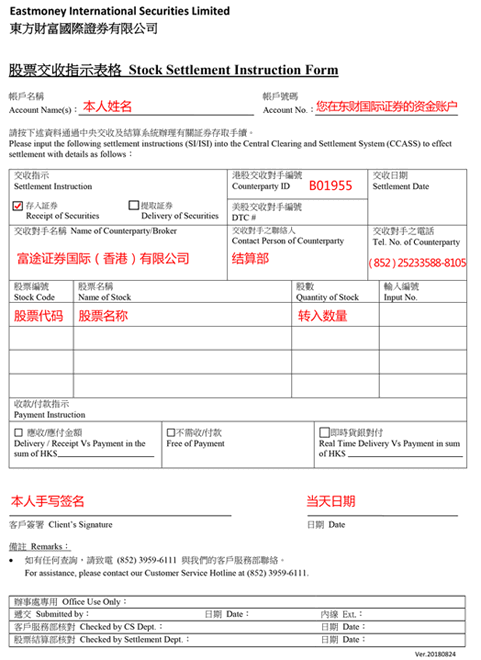
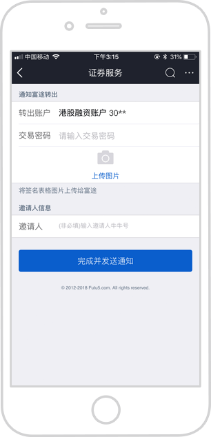

如何从富途转入股票
1.东方财富APP提交转入信息
登录东方财富APP点击【转入股票】，提交转入信息，包括转出券商，原券商账户号码以及个股信息并提交。
2.获取东财国际证券股票交收指示表格
在东财APP提交股票转入信息后，后台自动生成交收指示表格，可联系东财国际证券获取表格，通过拍照或者扫描形式以提交给富途证券。
3.登录富途APP或官网提交转出信息
登录富途证券APP或者官网，点击【交易】，找到【转出股票】，选择转出股票为港股还是美股，接收券商选择【其他证券公司】后点击按钮进入下一步。
4.提交转仓表格
填写富途证券交易密码后上传第二步获取的表格，完成并发送通知。
